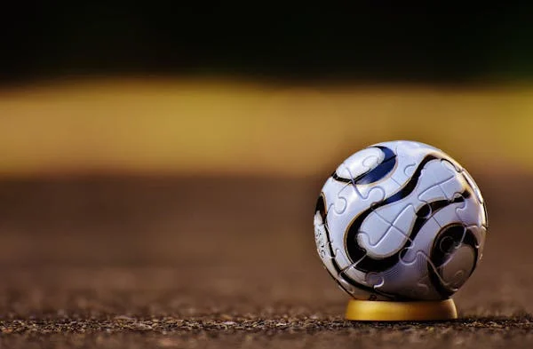

ABOUT ME
My name is Uchenna Ezeoffia, I am 13 years old , I am the third child in a family of six, a brother and two sisters. I am in Jss 3 and school at Cenad High School, my favourite subjects is Mathematics.

My name is Uchenna Ezeoffia, I am 13 years old , I am the third child in a family of six, a brother and two sisters. I am in Jss 3 and school at Cenad High School, my favourite subjects is Mathematics.
My favourite food is anything sweet and anything that tastes good, I really dont have any food I like in particular though, I'm more free to tasting new food out even though it looks one kin one kin.


As a hobby I enjoy playing games, playing football and coding. I enjoy playing games where you would have to manage your finances and prioritise your needs, it helps me build my management skills.I find coding relaxing to code while football helps me keep fit, so its a win-win, I do wht I enjoy and at the same helping my brain and muscles.


Football is my favourite sport to play because it is fun and at the same time exercise, it helps me to build my stamina and endurance. through playing football I am now able to run for longer hours without getting tired. It helps me build my muscles and helps my brain process things faster.

I want to become a footballer, just like my role model Lionel Messi